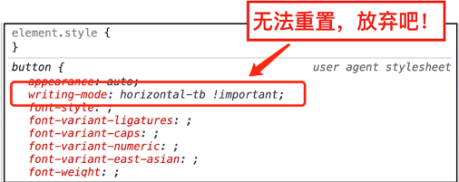
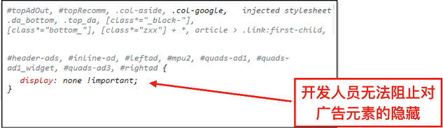

首页 > 编程笔记
CSS !important用法详解
在 CSS 属性值的后面添加 !important，可以提升 CSS 属性的优先级。
例如：
很多人都知道 !important 可以提升 CSS 属性的优先级，但不知道 !important 提升 CSS 属性优先级的机制，更不知道 !important 有逆向越级的神奇特性。
实际上，!important 所起的作用不是这样，而是直接将这个 CSS 属性带到另一个更高维度的世界中，而这个“更高维度的世界”就是更高级别的级联层级。
回顾一下级联层级的优先级关系：
可以看到，无论是浏览器内置的 CSS 样式、用户设置的 CSS 样式、@layer 规则中的 CSS 样式，还是开发者设置的 CSS 样式，其中的 CSS 属性只要被设置了 !important，就会拥有一个只属于其自身的级联层级。并且，如果我们观察得足够仔细，就会发现 !important 的级联层级的提升规则是逆向越级，非常有趣。
例如浏览器内置样式，经常会看到其后面跟着一个 !important，如下图所示。
大家千万不要企图使用任何 CSS 去重置它，这是不可能的，它的优先级最高。
又如优先级顺序处于倒数第二的用户设置样式，一旦注入的 CSS 包含 !important，开发人员就无法重置，即使同样设置了 !important 也不起作用，因为设置的层级没有原本的高。
这也是那些广告拦截插件代码如此简单，只是一个 display:none，我们却无能为力的原因，如下图所示，开发者是无法重置其中的 CSS 的，除非开发另一个同样级联层级的插件去覆盖。
由于 !important 可以轻松使 CSS 属性的优先级越级，因此，非到万不得已不要使用这个特性，因为这样会大大增加 CSS 代码的优先级复杂度，从而增加不必要的维护成本。
例如：
.foo { color: #fff !important; }
此时，无论使用何种级别的选择器，.foo 元素的颜色都是白色。很多人都知道 !important 可以提升 CSS 属性的优先级，但不知道 !important 提升 CSS 属性优先级的机制，更不知道 !important 有逆向越级的神奇特性。
!important与层级跨越
很多读者对 !important 的认知比较传统，认为 CSS 的优先级就像一个小世界，设置了 !important 之后，这个 CSS 属性就可以在 CSS 世界中“称王称霸”。实际上，!important 所起的作用不是这样，而是直接将这个 CSS 属性带到另一个更高维度的世界中，而这个“更高维度的世界”就是更高级别的级联层级。
回顾一下级联层级的优先级关系：
- 设置了!important的浏览器内置样式；
- 设置了!important的用户设置的样式；
- @layer规则中设置的包含!important的样式；
- 开发者设置的包含!important的样式；
- 开发者设置的CSS样式；
- @layer规则中的CSS样式；
- 用户设置的CSS样式；
- 浏览器内置的CSS样式。
可以看到，无论是浏览器内置的 CSS 样式、用户设置的 CSS 样式、@layer 规则中的 CSS 样式，还是开发者设置的 CSS 样式，其中的 CSS 属性只要被设置了 !important，就会拥有一个只属于其自身的级联层级。并且，如果我们观察得足够仔细，就会发现 !important 的级联层级的提升规则是逆向越级，非常有趣。
!important的逆向越级
所谓“逆向越级”，指的是原本级联层级高的 CSS 使用了 !important 之后，优先级反而低；而原本名不见经传、在底层苦苦挣扎的低级联层级 CSS 声明在应用了 !important 之后，直接“乌鸦变凤凰，鸟枪换大炮”，CSS 的优先级反而最高。例如浏览器内置样式，经常会看到其后面跟着一个 !important，如下图所示。

图 1 浏览器内置的CSS样式设置!important示意
图 1 浏览器内置的CSS样式设置!important示意
大家千万不要企图使用任何 CSS 去重置它，这是不可能的，它的优先级最高。
又如优先级顺序处于倒数第二的用户设置样式，一旦注入的 CSS 包含 !important，开发人员就无法重置，即使同样设置了 !important 也不起作用，因为设置的层级没有原本的高。
这也是那些广告拦截插件代码如此简单，只是一个 display:none，我们却无能为力的原因，如下图所示，开发者是无法重置其中的 CSS 的，除非开发另一个同样级联层级的插件去覆盖。

图 2 用户设置的CSS样式包含!important示意
图 2 用户设置的CSS样式包含!important示意
由于 !important 可以轻松使 CSS 属性的优先级越级，因此，非到万不得已不要使用这个特性，因为这样会大大增加 CSS 代码的优先级复杂度，从而增加不必要的维护成本。
关注公众号「站长严长生」，在手机上阅读所有教程，随时随地都能学习。内含一款搜索神器，免费下载全网书籍和视频。

微信扫码关注公众号